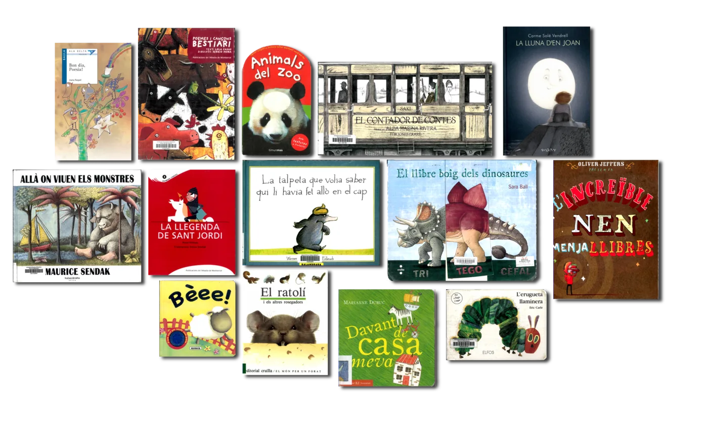

Pas 2. El llibre com a objecte i com a producte cultural
A l’hora de triar, la forma i les informacions externes són aspectes rellevants a tenir en compte.
Mira’t aquestes cobertes:
A l’hora de triar, la forma i les informacions externes són aspectes rellevants a tenir en compte.
Mira’t aquestes cobertes:

Abans d’obrir-lo i començar a llegir, un llibre ja ens ofereix molta informació. Sobre el seu contingut per descomptat, però també sobre l’època en què s’ha produït i sobre els lectors als quals es dirigeix.
Mitjançant el disseny material (el llibre com a objecte pròpiament dit) i els paratextos (els elements externs al text estricte): la mida, el format, el paper, el nombre de pàgines, la tipografia, el títol, les imatges de la coberta i de la contracoberta, les guardes, l’autor, l’il·lustrador, el lloc de publicació, l’editorial, la col·lecció (si n’hi ha), les dedicatòries, etc.
Ara mira’t aquest vídeo: podràs veure-hi exemples diversos sobre la informació que ofereixen el disseny material i els paratextos.
Vet aquí algunes preguntes que pots provar de respondre quan exploris les característiques externes d’un llibre:
T’interessa si et dediques o vols dedicar-te al món de la docència.
Mira’t l’esquema dels paratextos que hi ha a Textos y paratextos en los libros infantiles, de Gemma Lluch (2009).
Sovint els llibres infantils i els seus personatges esdevenen un objecte comercial i se’n fan productes de marxandatge, com ara motxilles, ninos, joguines, etc.
Però, a banda dels derivats que s’encarreguen de la difusió del llibre en el mercat, actualment les eines tecnològiques permeten confegir les històries de ficció amb elements diferents del text i de la imatge. És el cas de les aplicacions (apps) per a dispositius mòbils i de la literatura en format web, que poden oferir experiències de lectura diferents a través de la interactivitat, la música, els sons, la imatge en moviment o les possibilitats hipertextuals.
Si t’interessa endinsar-te en la literatura infantil digital, pots llegir les recomanacions de la pàgina del grup GRETEL.
Tens llibres infantils o juvenils a casa? Ves a la prestatgeria on els tens desats o bé estén-los sobre la taula, fes una fotografia i mostra-la en el fòrum. A més a més, tria’n un que t’agradi especialment i envia una imatge de la coberta i la contracoberta perquè els companys en puguin comentar els elements externs (paratextos).
Un cop ho hagis fet, comenta alguna de les cobertes o contracobertes que han enviat altres companys. Fes-ho des de la perspectiva de la informació que se’n pot deduir segons els paratextos, tal com has pogut veure en el vídeo. La teva intervenció hauria d’incloure tot allò que es pot deduir de l’observació de la portada i/o contraportada. Per exemple: en quin gènere creus que s’inscriu el llibre? Per a quina edat creus que va destinat? En saps res de l’autor o de l’il·lustrador? etc.
Si no tens llibres infantils i juvenils pots fer el mateix amb els llibres d’adults de què disposis a la biblioteca de casa teva.